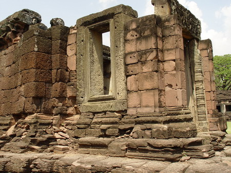

|  | หอพราหมณ์ด้านหน้าของปรางค์ประธานทางมุมทิศตะวันตกเฉียงใต้ มีอาคารรูปสี่เหลี่ยมผืนผ้าขนาด 6.50x17.00 เมตร สร้างอยู่บนฐานสูง มีมุขยื่นออกไปเป็นบันไดและประตูเข้าออกทางทิศตะวันตก ผนังด้านด้านข้างของห้องมุขมีหน้าต่างด้านละ 1 ช่อง ส่วนผนังด้านทิศเหนือและทิศใต้ซึ่งเป็นด้านยาวปิดทึบ อาคารหลังนี้สร้างด้วยหินทรายสีแดงเป็นหลัก ใช้ศิลาแลงแซมที่ผนังบางส่วน กรอบประตูหน้าต่างใช้หินทรายสีขาว การขุดแต่งใน พ.ศ. 2497 ได้พบศิวลึงค์ขนาดย่อมทำด้วยหินทราย จึงเชื่อกันว่าอาคารหลังนี้คงเป็นสถานที่ประกอบพิธีทางศาสนาพราหมณ์ เป็นเหตุให้เรียกต่อ ๆ กันมาว่าหอพราหมณ์ แต่เมื่อดูจากลักษณะแผนผัง และตำแหน่งที่ตั้งแล้ว อาคารหลังนี้ก็น่าจะได้แก่ อาคารที่มีชื่อเรียกกันในสถาปัตยกรรมเขมรว่าบรรณาลัย หรือบรรณศาลา มีความหมายตามรูปศัพท์ว่าเป็น ที่เก็บคัมภีร์ ซึ่งในปราสาทแบบศิลปะเขมรจะสร้างไว้ที่มุมของลานชั้นใน ทางด้านขวาของปรางค์ประธาน (จรรยา มาณะวิท และระวิวรรณ บุญญศาสตร์พันธุ์, 2542: 50) |